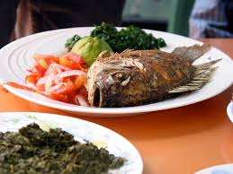

Breakfast Kenyan Style

When the Portuguese arrived in 1496 on the coast of Kenya, they introduced foods from newly discovered Brazil. Maize, bananas, pineapple, chilies, peppers, sweet potatoes, and cassava were brought in and became local staples. The Portuguese also brought oranges, lemons, and limes from China and India, as well as pigs.
It's all about Meat
- 
Pastoralism (cattle herding) has a long history in Kenya. Around A.D. 1000, a clan from North Africa called the Hima introduced cattle herding. By the 1600s, groups like the Maasai and Turkana ate beef exclusively. Cattle provided meat, milk, butter, and blood.
Ethnicity
Regions
EXPLORE!Kenya is a multi-racial society, the majority of people comprising native ethnic groups. The rest of the population is Asian, Arab, and European. The official languages of Kenya are Swahili and English. Traditional Kenyan foods reflect the many different lifestyles of the various groups in the country. Most Kenyan dishes are filling and inexpensive to make. Staple foods consist mainly of corn, maize, potatoes, and beans. Ugali (a porridge made of maize) and meat are typically eaten inland, while the coastal peoples eat a more varied diet.
Mealtime Customs
A typical Kenyan chakula (meal) is usually a heavy staple food, such as ugali or potatoes, with a side of vegetables. Ugali is typically served on a large dish where everyone can reach (using the right hand). Fruit is usually eaten for dessert in place of sweets. Mandazi , a semisweet, flat doughnut, is usually eaten at chakula cha asubuhi (breakfast) with kahawa or chai (coffee and tea in Swahili). Chai is served very milky and sweet. The tea, milk, and sugar are put into cold water and brought to a boil. Kenyans also eat chapattis at breakfast and usually dunk it into their coffee. Lunch is the main chakula of the day. Meat such as beef, goat, or mutton (sheep) is most commonly eaten. Other dishes can include githeri , a mix of beans (usually red kidney beans) and corn, and matoke , or mashed plantains (similar to a banana). Foods served at dinner are much like what is served at lunch.
ECONOMICS & NUTRITION
Apparently they go together
At the beginning of the twenty-first century, a prolonged drought (especially affecting northern Kenya) was a major cause of malnutrition, destroying food crops and forcing poorer families to live on meals of maize. This lack of protein results in deficiency diseases, especially with younger children. Symptoms of such diseases include fatigue and lethargy. In children, lack of protein results in poor growth with generalized swelling. A protuding round stomach is a common and visible symptom of severe malnutrition. Skin rashes and hair loss are also common.

About 41 percent of the population of Kenya is classified as undernourished by the World Bank. This means they do not receive adequate nutrition in their diet. Of children under the age of five, about 23 percent are underweight, and over 34 percent are stunted (short for their age).